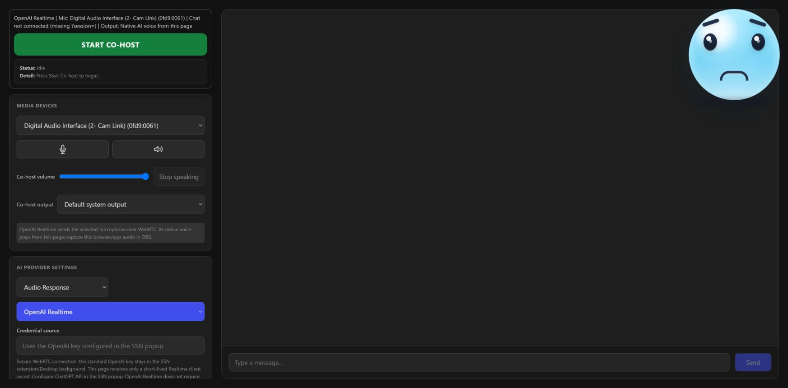

Co robi
Są dwa sposoby pracy ze współprowadzącym: ciągły rozmówca głosowy w cohost.htmloraz ręczne działania doku wysyłające zatwierdzone teksty do cohost-overlay.html.
Sterowanie w doku
Gdy nakładka sceniczna jest połączona, kliknij wiadomość w doku prawym przyciskiem i wybierz Współprowadzący. Dok może odczytać wiadomość, poprosić AI o odpowiedź lub przygotować lekko żartobliwą docinkę.
Nakładka sceniczna AI
Nakładka pokazuje awatar, dymek mowy i opcjonalnie dźwięk syntezy mowy przeglądarki. To źródło przeglądarki dodawane do OBS.
Prywatny bot czatu
Answer i Light Roast korzystają ze skonfigurowanego dostawcy LLM przez most Private Chat Bot. Read nie wymaga AI.
Multimodalny współprowadzący
cohost.html łączy się ze strumieniem czatu SSN po otwarciu z tą samą wartością session. Domyślny tryb tylko kontekstu pozwala AI pamiętać ostatnie wiadomości widzów i omawiać je na prośbę streamera.
Konfiguracja współprowadzącego w menu prawego przycisku doku
- Otwórz dok Streaming Chat ze swoją sesją:
dock.html?session=YOUR_SESSION_ID. - Dodaj nakładkę sceniczną AI do OBS:
cohost-overlay.html?session=YOUR_SESSION_ID. Dodaj&ttstylko dla trybu odpowiedzi tekstowych. - Aby korzystać z odpowiedzi AI, skonfiguruj dostawcę LLM w menu. Do szybkiej próby wybierz SSN Hosted Trial LLM, który używa
llm.socialstream.ninja. - Włącz Chat Bots and AI services > Chat Bot - Private Interface > Enable private chat bot option.
- Kliknij wiadomość w doku prawym przyciskiem i wybierz Współprowadzący. Menu jest ukryte, dopóki nakładka sceniczna nie zostanie wykryta. Wiersze wiadomości doku nie udostępniają jeszcze tego menu kontekstowego z klawiatury; użytkownicy klawiatury mogą korzystać z pola wpisywania wiadomości lub sterowania głosem na
cohost.html.

cohost.html stronę sterowania: wybierz kamerę i mikrofon, dostawcę AI, ustaw instrukcje systemowe i obserwuj panel stanu Live Chat.Wskazówka: Użyj tej samej wartości session dla doku i nakładki współprowadzącego. &tts dotyczy tekstowych nakładek. Gdy działa natywny dźwięk kontrolera, SSN tłumi powtórzony TTS nakładki; &forcetts celowo omija to zabezpieczenie.
Prosta opcja AI
llm.socialstream.ninja jest dostępne przez SSN Hosted Trial LLM jako darmowej, prostej opcji testowej, dopóki wersja próbna jest dostępna.
- Otwórz Chat Bots and AI services > Configure LLM Service Provider.
- Wybierz SSN Hosted Trial LLM (eksperymentalne).
- Pozostaw adres, token i model puste, aby użyć domyślnej konfiguracji próbnej.
- Przy dłuższym używaniu skorzystaj z własnego tokenu lub lokalnego dostawcy, jeśli usługa próbna zostanie wyłączona lub ograniczona.
Obsługa rozmowy głosowej
- OpenAI Realtime: Przesyła dźwięk mikrofonu wybranego na
cohost.htmlbezpośrednio do OpenAI w ramach jednej natywnej rozmowy głosowej. Rozmowa i kontekst czatu na żywo pozostają w tej samej sesji współprowadzącego. - SSN Desktop: Używa lokalnego Whisper z mikrofonem wybranym na
cohost.html. Pierwsze użycie pobiera około 42 MB; kolejne transkrypcje działają offline. - Chrome / link rozszerzenia Chrome: Rozszerzenie otwiera hostowaną stronę współprowadzącego w karcie Chrome. OpenAI Realtime używa WebRTC z krótkotrwałym sekretem klienta; dostawcy odpowiedzi tekstowych korzystają z Chrome Speech Recognition i mogą wymagać internetu.
- Inne przeglądarki: Rozpoznawanie mowy nie jest gwarantowane. Wpisywany czat współprowadzącego, dane czatu na żywo, obraz kamery/ekranu i odpowiedzi skonfigurowanego LLM mogą nadal działać bez rozpoznawania mowy.
W przypadku OpenAI Realtime Diagnostics powinno pokazywać Nasłuchiwanie (OpenAI WebRTC). Przy Desktop Whisper powinno być widoczne Nasłuchiwanie (Desktop Whisper) a następnie rozpoznany tekst w Usłyszano.
Prywatność: wybrany mikrofon, wyraźnie wskazane klatki kamery/ekranu oraz wiadomości widzów udostępniane w wybranym trybie Live Chat trafiają do tego dostawcy AI. Wiadomości widzów są niezaufanym kontekstem i nie mogą autoryzować narzędzi współprowadzącego. Otwórz wygenerowany link kontrolera z menu i zachowaj go w tajemnicy; jego prywatne uprawnienie wygasa po 12 godzinach, dotyczy bieżącej sesji SSN i znika z paska adresu po załadowaniu strony.
Konfiguracja OpenAI Realtime
- W menu SSN wybierz ChatGPT API, dodaj klucz API swojego projektu OpenAI i użyj Przetestuj wybranego bota czatu.
- Otwórz wygenerowany
cohost.html?session=YOUR_SESSION_IDlink z menu. Jego prywatne, wygasające uprawnienie współprowadzącego autoryzuje Realtime bez włączania osobnej opcji Private Chat Bot. - Wybierz OpenAI Realtime. Standardowy klucz pozostaje w tle rozszerzenia/aplikacji SSN; strona współprowadzącego otrzymuje tylko krótkotrwały sekret klienta Realtime.
- Wyraźnie wybierz mikrofon, do którego mówisz, pozostaw Odpowiedź dźwiękowa wybrane i naciśnij Uruchom współprowadzącego.
- Opcjonalnie: pozostaw Video source ustawione na Bez wideo (domyślnie) albo wyraźnie wybierz Udostępnianie ekranu lub kamery. OpenAI otrzymuje jeden aktualny obraz przy każdym bezpośrednim żądaniu głosowym lub wpisanym zamiast ciągłego wideo; może to zwiększyć koszt API i opóźnienie.
- Pozostaw Live Chat ustawione na Tylko kontekst — odpowiadaj na pytanie. Zapytaj „Co mówi czat?”, aby ten sam mówiący AI omówił ostatnie wiadomości widzów.
- Przechwyć w OBS dźwięk przeglądarki/aplikacji współprowadzącego. Natywny głos OpenAI jest odtwarzany tylko z
cohost.html;cohost-overlay.htmlotrzymuje awatar i tekst, a nie ten sam strumień dźwięku. Jeśli jest to obsługiwane, wybierz wirtualny kabel w Wyjście współprowadzącego aby wydzielić ścieżkę dźwięku w OBS. - Pozostaw widoczny dymek mowy nakładki scenicznej lub zapewnij napisy, aby odpowiedź AI nie była dostępna wyłącznie jako dźwięk.
Korzysta to z rozliczeń OpenAI API i tworzy jedną rozmowę SSN Realtime przez WebRTC, oddzielną od chatgpt.com. Odpowiedzi są ograniczone do 512 tokenów wyjściowych; Diagnostics pokazuje łączne zużycie tokenów i zmierzone opóźnienie pierwszego wyniku. OpenAI automatycznie ucina nieodtworzony dźwięk, gdy streamer przerwie. SSN przechowuje najwyżej 20 ostatnich wiadomości czatu przez maksymalnie 90 sekund wraz z kontekstem płatnego wsparcia, członkostwa, moderatora, wydarzenia i kanału źródłowego, po czym usuwa ten tymczasowy kontekst. SSN sprawdza ciche sesje, ponownie łączy uszkodzone połączenia i odnawia sesje przed limitem 60 minut. Odzyskana sesja przywraca instrukcje systemowe i ustawienia wydajności, ale zaczyna bez poprzedniej rozmowy głosowej.
Szybkość, jakość i koszt OpenAI
- Model: Mini jest zwykle szybszy i tańszy. Full quality ma większe możliwości i kosztuje więcej.
- Poziom rozumowania: Minimal lub Low zwykle skraca opóźnienie i zmniejsza rozliczane zużycie wyjściowe. High lub Extra high może poprawić złożone odpowiedzi, ale działać wolniej i kosztować więcej. Zmiany działają podczas połączenia.
- Szybkość przejmowania głosu: Fast czeka na koniec myśli do około 2 sekund; Balanced około 4, a Patient około 8 sekund. Fast reaguje szybciej, ale może przerwać naturalną pauzę.
- Diagnostyka: Latency mierzy czas od końca wypowiedzi do pierwszego tekstu lub dźwięku i w miarę możliwości oddziela opóźnienie modelu. Warunki sieciowe i obciążenie dostawcy mogą różnić się nawet przy podobnych żądaniach.
Opcjonalne sterowanie transmisją
OpenAI Realtime obsługuje opisane niżej narzędzia Spotify, scen OBS i wyróżnionego czatu. SSN Configured LLM obecnie obsługuje tylko Spotify; pozostali dostawcy współprowadzącego jeszcze nie udostępniają tych narzędzi.
- W menu SSN włącz tylko potrzebne narzędzia współprowadzącego: Spotify, sceny OBS lub wyróżniony czat.
- Dla OBS wpisz dokładne dozwolone nazwy scen, oddzielając je przecinkami, i pozostaw
actions.htmlpołączonego z OBS lub użyj źródła przeglądarki OBS z Full Permissions. - Na
cohost.html, otwórz Sterowanie transmisją przez współprowadzącego i zezwól na te same narzędzia w tym kontrolerze. - Poproś wprost, np. „przełącz na BRB”, „wyróżnij ostatnią wiadomość” lub „wyczyść wyróżniony czat”. Wiadomości widzów nie mogą autoryzować narzędzi, a na jedną bezpośrednią prośbę streamera działa najwyżej jedno narzędzie zmieniające transmisję.
Dostęp do narzędzi opiera się na liście dozwolonych funkcji, nie na ogólnym dostępie do API. OBS może wybierać tylko sceny wymienione w ustawieniach SSN. Żądania wyróżnienia używają niedawno przechwyconej wiadomości i wymagają doku Streaming Chat; odpowiedzi narzędzi potwierdzają dostarczenie, a nie wykonanie działania przez OBS lub nakładkę.
Jak strony się komunikują
Dok i nakładka używają istniejącego mostu sesji Social Stream. Wiadomości są wysyłane jako overlayNinja dane kierowane według etykiety.
Read on Co-host: dok wysyła wybraną wiadomość bezpośrednio do cohost-overlay.html.
Answer / Light Roast: dok wysyła prywatne żądanie bota do usługi SSN działającej w tle, pokazuje szkic AI w doku i wysyła go do nakładki dopiero po kliknięciu Speak przez streamera.
{
"action": "cohostOverlay",
"target": "cohost-overlay",
"meta": {
"command": "say",
"text": "The line the avatar should say",
"speak": true,
"emotion": "happy"
}
}
Dostępne działania
| Działanie | Wymaga | Wynik |
|---|---|---|
| Odczytaj przez współprowadzącego | Połączono cohost-overlay.html |
Odczytuje wybraną wiadomość czatu na nakładce. |
| Odpowiedz (Answer) | Private Chat Bot + skonfigurowany LLM lub Hosted Trial LLM | Tworzy krótki szkic odpowiedzi do zatwierdzenia przez streamera. |
| Lekka docinka (Light Roast) | Private Chat Bot + skonfigurowany LLM lub Hosted Trial LLM | Tworzy krótką, żartobliwą i odpowiednią dla ogółu odbiorców docinkę do zatwierdzenia przez streamera. |
| Mów (Speak) | Szkic w panelu zatwierdzania | Wysyła zatwierdzony tekst do nakładki scenicznej AI. |
| Kopiuj | Szkic w panelu zatwierdzania | Kopiuje szkic bez wysyłania go do nakładki. |
Stan i rozwiązywanie problemów
- Jeśli brakuje menu Co-host, nakładka współprowadzącego nie została wykryta w tej samej sesji.
- Jeśli Answer lub Light Roast jest wyłączone, most SSN albo Private Chat Bot jest niedostępny.
- Przełącznik nakładki głównego bota czatu jest opcjonalny i nie włącza działań współprowadzącego w menu prawego przycisku doku.
- Jeśli
cohost.htmlnie widzi czatu, sprawdź, czy URL ma tę samą wartośćsessionco menu oraz czy Live Chat jest ustawione na Context, Questions lub All. - Tylko kontekst obecnie przekazuje czat do AI tylko w OpenAI Realtime. Inni dostawcy obserwują strumień bez wprowadzania go do modelu.
- Wycisz mikrofon zatrzymuje dźwięk wysyłany do współprowadzącego. Wycisz głos współprowadzącego, suwak głośności, wybór urządzenia wyjściowego i Przestań mówić sterują odtwarzaniem. Wycisz udostępniany dźwięk systemowy jest oddzielne i pojawia się dla dostawców obsługujących obraz ekranu.
- Jeśli narzędzie sterowania transmisją jest niedostępne, włącz je zarówno w menu SSN, jak i w Sterowanie transmisją przez współprowadzącego. OBS wymaga też co najmniej jednej dokładnej nazwy sceny na liście dozwolonych.
- Użyj Przetestuj nakładkę aby wysłać nieszkodliwy widoczny tekst testowy, a następnie sprawdź, czy pojawia się w AI Stage Overlay w OBS.
- Jeśli współprowadzący zna czat, ale milczy, to oczekiwane w trybie Tylko kontekst: zapytaj, co mówi czat. Questions lub All odczytują automatyczne odpowiedzi ze strony współprowadzącego; nie publikują ich na czacie YouTube, Twitcha ani Kicka.
- Jeśli Desktop pokazuje Nasłuchiwanie (Desktop Whisper) ale nigdy nie uzupełnia Usłyszano, sprawdź, czy wybrany mikrofon nie jest wyciszony, i poczekaj na pierwsze pobranie modelu.
- Jeśli Chrome nigdy nie uzupełnia Usłyszano, zezwól na mikrofon, sprawdź domyślny mikrofon systemu, dostęp do internetu i dostępność Chrome Speech Recognition.
- Jeśli tekst OpenAI Realtime się pojawia, ale brak dźwięku, sprawdź Odpowiedź dźwiękowa, uprawnienia dźwięku w przeglądarce i przechwytywanie dźwięku przeglądarki/aplikacji w OBS. Użyj
&ttstylko dla osobnego trybu nakładki tekstowej. - Jeśli odpowiedzi OpenAI Realtime są wolne, spróbuj Mini, Low reasoning i Fast turn-taking, a następnie porównaj Latency w Diagnostics. Wyższy poziom rozumowania i Patient turn-taking celowo wymieniają szybkość na głębsze odpowiedzi lub dłuższe pauzy.
- Jeśli OpenAI Realtime się rozłączy, pozostaw współprowadzącego uruchomionego podczas ponownych prób. Diagnostics wskazuje awarię danych, połączenia równorzędnego, dostawcy lub kontroli stanu. Odzyskana sesja zachowuje wybrane instrukcje systemowe i ustawienia wydajności, ale nie odzyskuje poprzedniej rozmowy głosowej.
- Jeśli żądanie Answer, Light Roast lub SSN Configured LLM przekroczy czas oczekiwania, sprawdź, czy Social Stream jest włączony, sesja jest zgodna, Private Chat Bot włączony, a wybrany dostawca LLM dostępny. OpenAI Realtime nie wymaga Private Chat Bot.
- Jeśli Local Gemma nie może pobrać plików modelu z domyślnego hosta zasobów, ustaw własny host z kopią folderu Gemma.
- Jeśli próbne AI w chmurze przestaje odpowiadać, mogło zostać wyłączone lub ograniczone; przejdź na własny token, Ollama lub Custom API.
- Jeśli otwartych jest kilka nakładek, upewnij się, że etykieta nakładki odpowiada celowi doku. Domyślna etykieta to
cohost-overlay.
Przydatne parametry URL
session=YOUR_SESSION_ID— wymagany, by dok i nakładka korzystały z tego samego pokoju.ttslubspeak=1— pozwala nakładce mówić za pomocą TTS przeglądarki.forcetts— pozwala na TTS nakładki, nawet gdy kontroler współprowadzącego już odtwarza dźwięk; celowo tworzy drugi głos.label=cohost-overlay— ustawia docelową etykietę nakładki.name=NinjaBot— ustawia nazwę wyświetlaną na nakładce.avatar=https://...— używa własnego obrazu awatara.position=bottom-right— steruje położeniem na scenie.scale=1.2— skaluje nakładkę.status— pokazuje na nakładce tekst połączenia/stanu.
Uwagi projektowe
- W trybach tekstowych obsługiwanych przez dok/ręcznie nakładka wyświetla odpowiedź i opcjonalnie odtwarza TTS. Dla natywnego głosu OpenAI przechwyć
cohost.htmlosobno; nakładka sceniczna nie odtwarza ponownie tego samego dźwięku WebRTC. - Dok jest panelem sterowania, więc zatwierdzanie przez streamera nie trafia na transmisję.
- Wygenerowane odpowiedzi nie są odczytywane automatycznie; streamer musi je najpierw zatwierdzić.
- Niestandardowe szczegóły polecenia znajdują się w
meta, dzięki czemu dane pozostają przewidywalne dla nakładek i automatyzacji.